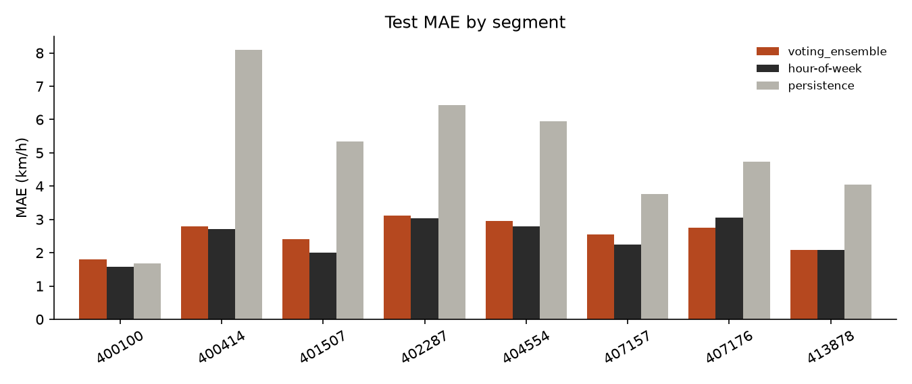
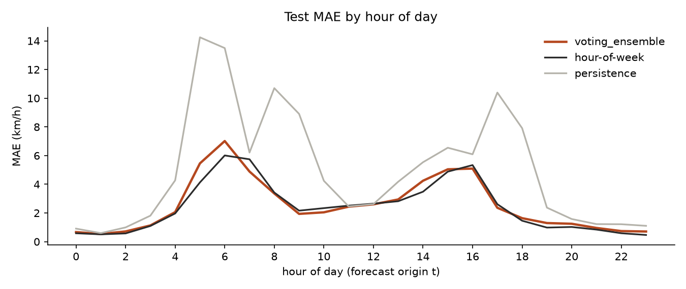
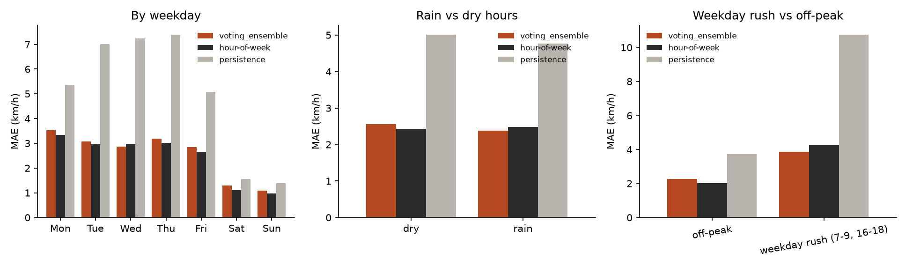
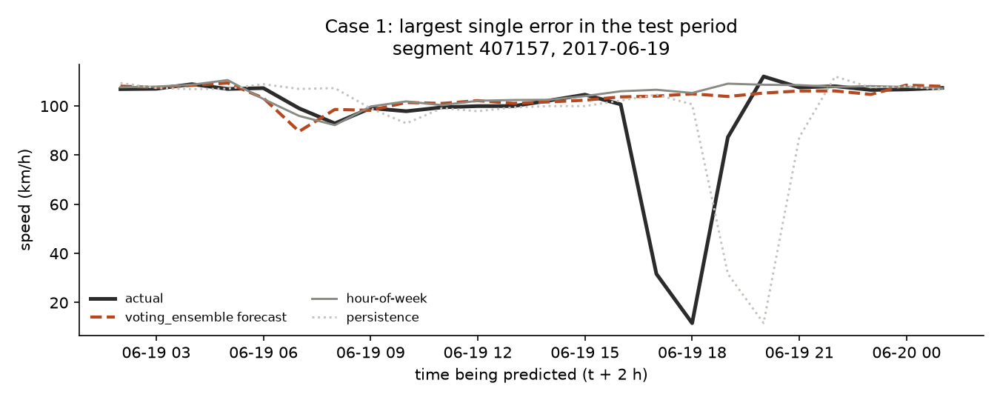
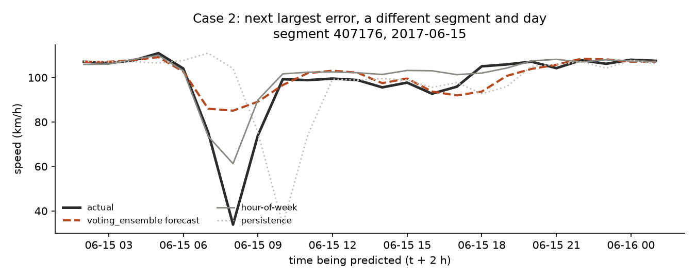
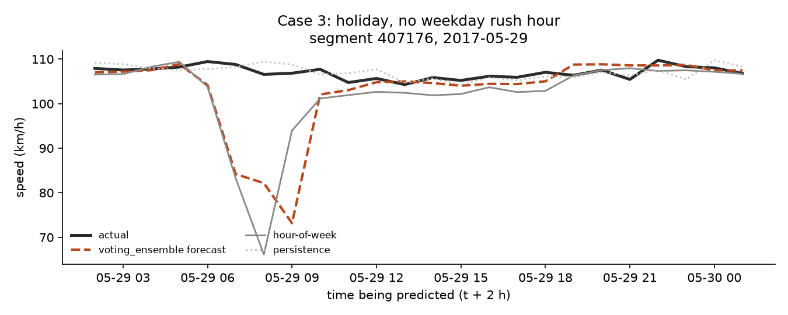
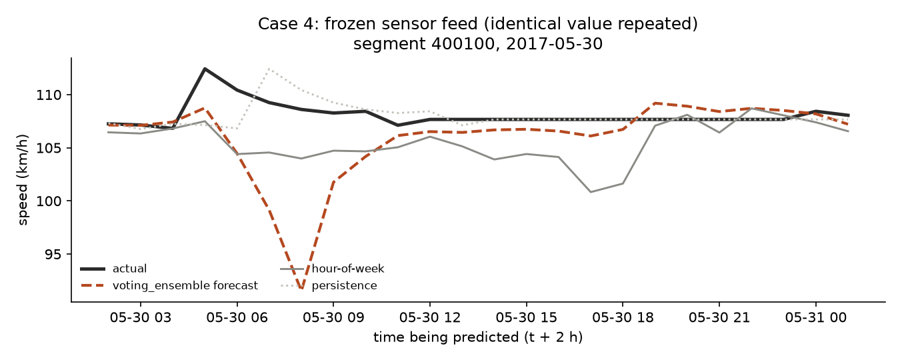
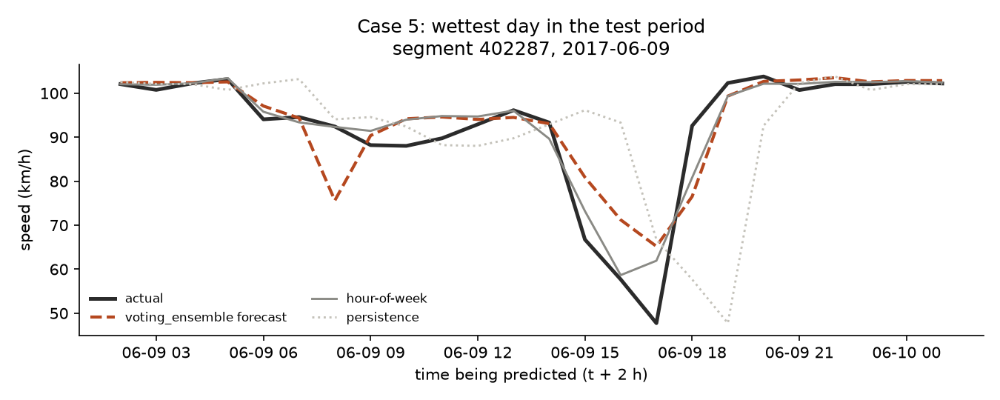

Research question
Drivers, freight operators and traffic managers plan around conditions that will exist later, not the ones they see now. This project asks: can a model that sees only information available at hour t predict the average speed on a road segment at hour t + 2 more accurately than the two forecasts that need no learning?
- Row unit
- One road sensor (segment) at one hour.
- Target
target_2h: average speed on that segment at t + 2, in km/h.- Information
- Speeds up to hour t (the segment and its 3 nearest sensors), weather observed at t, and calendar fields.
- Primary metric
- Mean absolute error (MAE) in km/h. RMSE and skill against persistence are also reported.
- Baselines
- Persistence (speed now) and hour-of-week mean. A model has to be judged against both.
PEMS-BAY freeway detectors
Source. Caltrans Performance Measurement System (PeMS) detectors in the San Francisco Bay Area, distributed with the
DCRNN repository (Li et al., 2018). The file holds 325 sensors with 52,116 five-minute readings
from 1 January to 30 June 2017, in miles per hour. Weather comes from the Open-Meteo historical API and holidays from the Python
holidays package (US, California).
Segments used. Eight sensors (see data summary) were chosen before any modelling: at least 95% coverage and spread along the network by longitude. Aggregated to hourly values this gives 34,752 rows (8 segments × 4,344 hours). Units. Speeds are converted from mph to km/h (× 1.609344).
Quality checks
Stored as zero
About 0.003% of readings are exact zeros and are treated as missing. At one moment (2017-06-15 01:00) 67% of sensors read zero together: a feed outage, not a traffic jam.
Nearly full
Missing speed is 0.023% of hours: the one hour skipped by the March daylight-saving change (12 March), identical for all segments. An hour needs at least 9 of 12 readings.
Clean and local
No duplicate rows and no gaps in weather. Timestamps are local time: weekday slowdowns appear at 07–09 and 16–18.
One frozen feed
Segment 400100 repeats one value for 10 to 24 hours on several days. It was kept and is listed as a limitation.


From raw readings to a modelling table
- Zeros to missing, then mph to km/h.
- Hourly averages of the twelve 5-minute readings, kept only when at least 9 of 12 exist.
- Neighbours. The speed of the 3 nearest sensors at hour t, chosen by latitude/longitude distance (straight-line distance, not road connectivity), averaged into
neighbour_speed_t. - Weather and calendar merged by hour; features built as in the table below; the target is the speed two hours later.
Three leakage rules
- Only the past. Every feature uses data up to hour t. The target (t + 2) is a label, never an input. A test in
src/testschecks this. - Time order with gaps. Train, validation and test are consecutive blocks in time, separated by 2-hour gaps so no target overlaps the next block.
- Fit on training data only. Imputation and scaling live inside the model pipeline and are fitted on the training rows. The hour-of-week profile also comes from training data. Hyperparameters are tuned with forward-chaining folds on the training block.
Features (16) and when each is known
| Feature | What it is | Available at |
|---|---|---|
lag_1h, lag_2h | Segment speed 1 and 2 hours before t | t − 1, t − 2 |
lag_24h, lag_168h | Same hour yesterday and last week | t − 24, t − 168 |
roll_3h_mean, roll_24h_mean | Rolling mean of the segment speed; the window ends at t | up to t |
neighbour_speed_t | Mean speed of the 3 nearest sensors at hour t | t |
temperature, humidity, precipitation | Observed weather (not a forecast) | t |
hour_sin, hour_cos, dow, is_weekend, month | Calendar fields; hour is encoded as a circle | known in advance |
is_holiday | US/California public holiday flag | known in advance |
Split
| Block | From | To | Rows |
|---|
Blocks are 60/20/20 of the hours in time order; the 2-hour gaps are the narrow bars. Row counts are model rows (segment-hours with all features and a target).
Two baselines, seven models
| Method | Objective | Assumption | Why included |
|---|---|---|---|
| Persistence | Predict the speed at t+2 as the speed now. | Traffic changes slowly. | Simplest forecast; the reference for skill. |
| Hour-of-week mean | Average speed for this segment, weekday and hour in the training data. | Traffic repeats weekly. | Needs no learning; a strong bar for any model. |
| Linear regression | Least squares. | Speed is a linear function of the features. | Interpretable starting point. |
| Ridge | Least squares plus an L2 penalty. | Linear, with correlated lags. | Stabilises coefficients when features overlap (lags, rolling means). |
| Lasso | Least squares plus an L1 penalty. | Linear, with some useless features. | Can switch weak features off. |
| Decision tree | Split the data into rules that reduce squared error. | Thresholds and interactions matter. | Captures “weekday and 08:00 means slow” without manual interaction terms. |
| Random forest | Average many decorrelated trees. | Many weak, noisy trees average to a stable one. | Reduces the variance of a single tree. |
| XGBoost | Add trees one by one, each fitting the remaining errors. | Errors have structure a next tree can learn. | Strong default for tabular data. |
| Voting ensemble | Average the forecasts of random forest, XGBoost and decision tree. | Different models make different mistakes. | Chosen by the validation rule (see Evaluation). |
Left out on purpose. SVR (kernel methods scale poorly with rows and need careful tuning), an MLP and an LSTM (more tuning and data than ~20,000 training rows of 16 tabular features justify, and harder to explain). The tree models and linear models already cover simple-to-flexible.
How the models were judged
- Split. Chronological 60/20/20 with 2-hour gaps (see the diagram above). Validation starts –; test starts –.
- Three separate jobs. Tuning uses forward-chaining folds inside the training block. Selection uses validation MAE. The test block is for one final report.
- Selection rule, fixed in advance: among the trained models, take the lowest validation MAE. Baselines are not candidates.
- Metrics. MAE in km/h (primary: easy to read, not dominated by rare huge misses), RMSE (penalises large misses more), and skill = 1 − MAEmodel / MAEpersistence.
- Uncertainty. A bootstrap that resamples whole days (errors in neighbouring hours are correlated) gives a 95% interval for the test MAE.
Validation results (used for selection)
| Model | Validation MAE (km/h) | Kind |
|---|
04_final_test.py and 05_export_site.py were run once, earlier than planned, following an AI coding assistant's step. 03_train_select.py was re-run at 11:22 and reproduced the same selection (deterministic seed). No model, feature or hyperparameter change was made after test results existed.Model comparison
| Model | Val MAE | Test MAE | Test RMSE | Skill | 95% CI (test MAE) |
|---|
km/h; lower MAE is better. n/a: only the selected model and the two baselines were scored on test, by design; scoring every model on test would be selection on test. Bold row: the model chosen on validation.
Sand bars: validation MAE. Rust bars: test MAE, where scored.
Interaction 1: Forecast explorer
Choose a segment, a day (test period) and a model. Each point compares the real speed with the forecast made two hours earlier. Hover for values.
Where the forecasts fail
Errors below are for the selected model on the test block, next to hour-of-week and persistence. This analysis describes errors; it did not change the model.



Interaction 2: Error heatmap
Error by weekday and hour of the forecast origin. Pale cells have too few hours to trust. Hover a cell for MAE, skill and count.
Five failure cases
Chosen by stated rules, not hand-picked. Explanations are likely reasons; the data has no incident log, so none is proven.
Case 1. The largest single error

Case 2. A short early-morning dip

Case 3. A public holiday

Case 4. A frozen sensor feed

Case 5. The wettest day

What this study cannot claim
One network, one half-year
Eight segments on Bay Area freeways, January to June 2017. Nothing here shows how the models behave in other cities or seasons.
Sensor quality
Zero readings are treated as missing, one network-wide feed outage was seen, and segment 400100 has a frozen feed. It was kept and flagged, not repaired.
No incident, roadworks or event data
The largest errors (cases 1 and 2) look like events no model with these inputs can anticipate.
Weather is observed at time t,
not forecast, so the weather features are easier here than in real use.
Distribution shift
The test block is the last five weeks of the series. Patterns change with seasons, school terms and infrastructure work.
Association, not causation
The models find patterns that go with speed; they do not show what causes slowdowns.
The test run was not sealed
It was run earlier than planned (see the disclosure under Evaluation). No change followed, but the order of events is a weakness of the process.
No trained model beat hour-of-week
on validation or on test. The weekly mean is a strong baseline at this horizon.
Did the models beat the baseline?
Loading results…
What this shows. At a two-hour horizon, past speeds, neighbours, weather and the calendar give a large gain over persistence, but almost all of that gain is already captured by the weekly pattern. The most useful single piece of information is the typical speed for this segment at this hour of this weekday.
What it does not show. It does not show that the model is bad in general, that these results hold for other roads or seasons, or why any slowdown happened. The paired difference to hour-of-week is small enough that its interval includes zero, so the honest claim is “no improvement shown”, not “worse”.
Next steps. Add incident and event data, which is where the biggest misses come from; use weather forecasts rather than observations; try a model that predicts the difference from the weekly profile; and repeat on more months with the test block sealed until the end.
Run it yourself
Python 3.11 or newer; seed random_state=0 throughout. requirements.txt pins pandas<3, because pandas 3 cannot read the HDF5 speed file through PyTables. Raw data is not in the repository: download pems-bay.h5 and graph_sensor_locations_bay.csv into data/raw/ as described in data/raw/SOURCES.md.
git clone https://github.com/Shrey0407/traffic-flow-prediction.git
cd traffic-flow-prediction
python -m venv .venv
.venv\Scripts\Activate.ps1
pip install -r requirements.txt
python src/01_build_dataset.py # hourly table, segments, neighbours, weather, holidays
python src/02_features_split.py # features and the 60/20/20 split with gaps
python src/baselines.py # persistence and hour-of-week
python src/03_train_select.py # tune on train, choose on validation
python src/04_final_test.py # run ONCE: scores the test block
python src/05_export_site.py # writes docs/data/*.json
pytest src/tests # leakage and pipeline checks
python -m http.server 8000 --directory docsExpected key outputs. pytest: 8 passed. results/validation_metrics.csv: hour_of_week lowest, voting_ensemble the best trained model. results/final_test_metrics.csv: one row with the test MAE, RMSE, skill and 95% interval shown on this page. Open http://localhost:8000; opening index.html directly will not load the data.
Author, AI use and sources
Author: Shrey Mevawala.
AI use. An AI assistant (Claude, Anthropic) helped with planning, code scaffolding, explanations and drafting. What it did and how each output was checked is recorded in AI_USE.md; the contribution log is in CONTRIBUTION_LOG.md.
Citations. Li, Y., Yu, R., Shahabi, C., Liu, Y. (2018). Diffusion Convolutional Recurrent Neural Network: Data-Driven Traffic Forecasting. ICLR 2018 (DCRNN and the PEMS-BAY files); Caltrans PeMS; Open-Meteo historical weather API; holidays Python package; scikit-learn; XGBoost; Chart.js.